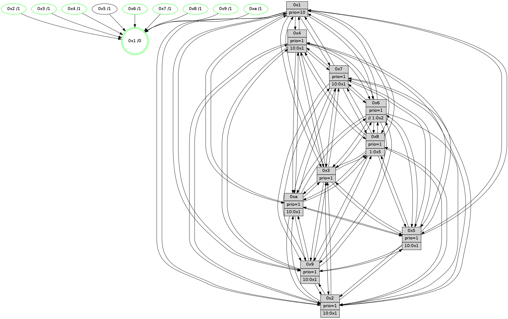

>> << IDX [start] -100 -25 -5 +0 +5 +25 [1620.03773308]
 Previous packets
----------------------------------------------------------------------
1615.308945 beacon01(faad) #0 coord=01,02,03,04,05,06,07,0a,09,08 cycle=688.0ms assoc
-- color-indic=1 64 0e e8
1615.318928 beacon02(faad) #0 coord=01,02,03,04,05,06,07,0a,09,08 cycle=688.0ms assoc 64 9d d9
1615.328928 beacon03(faad) #0 coord=01,02,03,04,05,06,07,0a,09,08 cycle=688.0ms assoc 64 e7 94
1615.338926 beacon04(faad) #0 coord=01,02,03,04,05,06,07,0a,09,08 cycle=688.0ms assoc 64 90 7e
1615.348928 beacon05(faad) #0 coord=01,02,03,04,05,06,07,0a,09,08 cycle=688.0ms assoc 64 ea 33
1615.358928 beacon06(faad) #0 coord=01,02,03,04,05,06,07,0a,09,08 cycle=688.0ms assoc 64 64 e4
1615.368930 beacon07(faad) #0 coord=01,02,03,04,05,06,07,0a,09,08 cycle=688.0ms assoc 64 1e a9
1615.378932 beacon0a(faad) #0 coord=01,02,03,04,05,06,07,0a,09,08 cycle=688.0ms assoc 64 6f a2
1615.388934 beacon09(faad) #0 coord=01,02,03,04,05,06,07,0a,09,08 cycle=688.0ms assoc 64 e1 75
1615.398933 beacon08(faad) #0 coord=01,02,03,04,05,06,07,0a,09,08 cycle=688.0ms assoc 64 9b 38
1615.411406 [Hello(8): seq=973 sym=5,2,3,7,9,6,4,10,1 sysInfo=hasWarning stat=5:15,7,12,4/2:4,3,5,0/3:3,13,10,6/7:5,14,11,2/9:0,9,14,9/6:14,10,8,5/4:8,14,3,3/10:11,9,5,8/1:5,7,12,0]
1615.414440 [Hello(9): seq=973 sym=2,5,3,4,7,6,8,10,1 sysInfo=hasWarning stat=2:14,11,7,15/5:1,14,11,2/3:14,15,5,8/4:0,1,1,0/7:10,11,5,3/6:12,11,4,6/8:4,7,12,11/10:2,5,2,1/1:13,9,10,1]
1615.417143 [Hello(7): seq=1029 sym=2,3,5,6,8,4,9,10,1 sysInfo=hasWarning stat=2:4,9,4,8/3:7,0,9,8/5:6,15,0,7/6:1,1,3,2/8:13,8,10,3/4:3,10,7,2/9:8,8,10,5/10:9,0,1,1/1:4,12,7,0]
1615.419967 [Color(7) seq=536 @0:0 prio=1 >10.@1,1.@5,1.@6,1.@8]
1615.424639 [Color(1) seq=709 @0:0 prio=10]
1615.426820 [Color(9) seq=555 @0:0 prio=1 >10.@1,1.@5,1.@6,1.@7]
1615.428926 [Hello(10): seq=962 sym=6,2,3,8,7,5,9,1 sysInfo=hasWarning stat=6:8,11,4,10/2:0,0,8,4/3:7,4,15,1/8:3,2,9,8/7:7,10,4,2/5:4,1,9,5/9:5,11,2,0/1:3,3,9,1]
1615.432274 [Color(10) seq=606 @0:0 prio=1 >10.@1,1.@5,1.@6,1.@7]
1615.436107 [Hello(4): seq=1029 sym=5,8,6,2,3,9,7,10,1 sysInfo=hasWarning stat=5:6,4,2,6/8:15,5,7,1/6:13,13,15,7/2:14,0,6,5/3:2,2,13,2/9:13,6,3,6/7:6,0,8,3/10:15,15,11,1/1:6,5,8,1]
1615.440206 [Color(4) seq=546 @0:0 prio=1 >10.@1,1.@2,1.@3,1.@5]
----------------------------------------------------------------------
1616.097078 beacon01(faad) #0 coord=01,02,03,04,05,06,07,0a,09,08 cycle=688.0ms assoc
-- color-indic=1 64 3a f0
1616.107060 beacon02(faad) #0 coord=01,02,03,04,05,06,07,0a,09,08 cycle=688.0ms assoc 64 a9 c1
1616.117061 beacon03(faad) #0 coord=01,02,03,04,05,06,07,0a,09,08 cycle=688.0ms assoc 64 d3 8c
1616.127061 beacon04(faad) #0 coord=01,02,03,04,05,06,07,0a,09,08 cycle=688.0ms assoc 64 a4 66
1616.137061 beacon05(faad) #0 coord=01,02,03,04,05,06,07,0a,09,08 cycle=688.0ms assoc 64 de 2b
1616.147062 beacon06(faad) #0 coord=01,02,03,04,05,06,07,0a,09,08 cycle=688.0ms assoc 64 50 fc
1616.157062 beacon07(faad) #0 coord=01,02,03,04,05,06,07,0a,09,08 cycle=688.0ms assoc 64 2a b1
1616.167066 beacon0a(faad) #0 coord=01,02,03,04,05,06,07,0a,09,08 cycle=688.0ms assoc 64 5b ba
1616.187067 beacon08(faad) #0 coord=01,02,03,04,05,06,07,0a,09,08 cycle=688.0ms assoc 64 af 20
1616.199898 [Hello(1): seq=939 sym=4,2,9,5,10,3,8,6,7 sysInfo=coloring-mode-on,ColoringModeRequestCalled stat=4:3,6,0,5/2:12,6,14,9/9:14,10,14,6/5:3,3,3,13/10:8,2,6,11/3:9,2,7,15/8:10,15,12,9/6:4,14,0,8/7:4,5,5,5]
1616.210600 [Hello(5): seq=1030 sym=7,6,4,2,1,9,8,10,3 sysInfo=hasWarning stat=7:13,15,7,3/6:14,6,6,4/4:10,1,9,1/2:10,11,7,2/1:1,3,1,0/9:6,13,3,15/8:7,14,14,10/10:14,12,7,13/3:13,9,8,0]
1616.217282 [Hello(3): seq=1030 sym=1,7,6,2,4,8,9,10,5 sysInfo=hasWarning stat=1:7,15,14,0/7:10,1,12,1/6:5,13,3,1/2:5,4,3,0/4:5,14,8,1/8:4,0,15,10/9:2,1,1,4/10:10,9,8,9/5:4,4,13,4]
1616.221694 [Color(3) seq=659 @0:0 prio=1]
----------------------------------------------------------------------
1616.885208 beacon01(faad) #0 coord=01,02,03,04,05,06,07,0a,09,08 cycle=688.0ms assoc
-- color-indic=1 64 86 f5
1616.895190 beacon02(faad) #0 coord=01,02,03,04,05,06,07,0a,09,08 cycle=688.0ms assoc 64 15 c4
1616.905190 beacon03(faad) #0 coord=01,02,03,04,05,06,07,0a,09,08 cycle=688.0ms assoc 64 6f 89
1616.915190 beacon04(faad) #0 coord=01,02,03,04,05,06,07,0a,09,08 cycle=688.0ms assoc 64 18 63
1616.925191 beacon05(faad) #0 coord=01,02,03,04,05,06,07,0a,09,08 cycle=688.0ms assoc 64 62 2e
1616.935190 beacon06(faad) #0 coord=01,02,03,04,05,06,07,0a,09,08 cycle=688.0ms assoc 64 ec f9
1616.945192 beacon07(faad) #0 coord=01,02,03,04,05,06,07,0a,09,08 cycle=688.0ms assoc 64 96 b4
1616.955197 beacon0a(faad) #0 coord=01,02,03,04,05,06,07,0a,09,08 cycle=688.0ms assoc 64 e7 bf
1616.965195 beacon09(faad) #0 coord=01,02,03,04,05,06,07,0a,09,08 cycle=688.0ms assoc 64 69 68
1616.975196 beacon08(faad) #0 coord=01,02,03,04,05,06,07,0a,09,08 cycle=688.0ms assoc 64 13 25
1616.986742 [Hello(8): seq=974 sym=5,2,3,7,9,6,4,10,1 sysInfo=hasWarning stat=5:0,7,12,4/2:4,3,5,0/3:4,14,10,6/7:6,15,11,2/9:1,10,14,9/6:14,11,8,5/4:9,15,3,3/10:12,10,5,8/1:6,8,12,0]
1616.989847 [STC(1) #0.295 new-neigh,tree-change,inconsistent-stability,stable,to-color d=0]
1616.991701 [Hello(9): seq=974 sym=2,5,3,4,7,6,8,10,1 sysInfo=hasWarning stat=2:15,12,7,15/5:2,14,11,2/3:15,0,5,8/4:1,2,1,0/7:10,11,5,3/6:12,11,4,6/8:5,7,12,11/10:3,6,2,1/1:14,9,10,1]
1616.994171 [Hello(10): seq=963 sym=6,2,3,8,7,5,9,4,1 sysInfo=hasWarning stat=6:9,12,4,10/2:0,0,8,4/3:8,5,15,1/8:4,2,9,8/7:7,10,4,2/5:5,1,9,5/9:5,11,2,0/4:0,1,0,0/1:4,3,9,1]
1616.996891 [Color(9) seq=556 @0:0 prio=1 >10.@1,1.@5,1.@6,1.@7]
1616.999033 [Color(10) seq=607 @0:0 prio=1 >10.@1,1.@5,1.@6,1.@7]
1617.000711 [Color(1) seq=710 @0:0 prio=10]
1617.004266 [Hello(4): seq=1030 sym=5,8,6,2,3,9,7,10,1 sysInfo=hasWarning stat=5:7,4,2,6/8:0,5,7,1/6:13,13,15,7/2:15,0,6,5/3:3,3,13,2/9:13,6,3,6/7:6,0,8,3/10:15,15,11,1/1:7,5,8,1]
1617.007092 [Color(4) seq=547 @0:0 prio=1 >10.@1,1.@2,1.@3,1.@5]
1617.008721 [Hello(7): seq=1030 sym=2,3,5,6,8,4,9,10,1 sysInfo=hasWarning stat=2:4,9,4,8/3:8,1,9,8/5:7,15,0,7/6:2,2,3,2/8:14,8,10,3/4:4,11,7,2/9:8,9,10,5/10:10,1,1,1/1:5,13,7,0]
1617.011542 [Color(7) seq=537 @0:0 prio=1 >10.@1,1.@5,1.@6,1.@8]
----------------------------------------------------------------------
1617.673339 beacon01(faad) #0 coord=01,02,03,04,05,06,07,0a,09,08 cycle=688.0ms assoc
-- color-indic=1 64 42 fb
1617.683321 beacon02(faad) #0 coord=01,02,03,04,05,06,07,0a,09,08 cycle=688.0ms assoc 64 d1 ca
1617.693321 beacon03(faad) #0 coord=01,02,03,04,05,06,07,0a,09,08 cycle=688.0ms assoc 64 ab 87
1617.703322 beacon04(faad) #0 coord=01,02,03,04,05,06,07,0a,09,08 cycle=688.0ms assoc 64 dc 6d
1617.713321 beacon05(faad) #0 coord=01,02,03,04,05,06,07,0a,09,08 cycle=688.0ms assoc 64 a6 20
1617.723322 beacon06(faad) #0 coord=01,02,03,04,05,06,07,0a,09,08 cycle=688.0ms assoc 64 28 f7
1617.733323 beacon07(faad) #0 coord=01,02,03,04,05,06,07,0a,09,08 cycle=688.0ms assoc 64 52 ba
1617.743327 beacon0a(faad) #0 coord=01,02,03,04,05,06,07,0a,09,08 cycle=688.0ms assoc 64 23 b1
1617.753328 beacon09(faad) #0 coord=01,02,03,04,05,06,07,0a,09,08 cycle=688.0ms assoc 64 ad 66
1617.763327 beacon08(faad) #0 coord=01,02,03,04,05,06,07,0a,09,08 cycle=688.0ms assoc 64 d7 2b
1617.775532 [Hello(1): seq=940 sym=4,2,9,5,10,3,8,6,7 sym= sysInfo=coloring-mode-on,ColoringModeRequestCalled stat=]
1617.778889 [STC(8)->1 #0.295 new-neigh,tree-change,inconsistent-stability,stable,to-color d=1]
1617.780308 [Hello(3): seq=1031 sym=1,7,2,4,8,9,10,5 sysInfo=hasWarning stat=1:8,0,15,0/7:11,2,12,1/2:5,4,3,0/4:6,15,8,1/8:5,0,15,10/9:3,2,1,4/10:11,10,8,9/5:4,4,13,4]
1617.783948 [STC(3)->1 #0.295 new-neigh,tree-change,inconsistent-stability,stable,to-color d=1]
1617.786182 [Hello(5): seq=1031 sym=7,6,4,2,1,9,8,10,3 sysInfo=hasWarning stat=7:14,0,7,3/6:14,6,6,4/4:11,2,9,1/2:10,11,7,2/1:1,4,2,0/9:7,14,3,15/8:8,14,14,10/10:15,13,7,13/3:14,10,8,0]
1617.788608 [Color(3) seq=660 @0:0 prio=1]
1617.790378 [STC(5)->1 #0.295 new-neigh,tree-change,inconsistent-stability,to-color d=1]
1617.793834 [Hello(6): seq=1031 sym=3,2,5,4,7,9,8,10,1 sysInfo=hasWarning stat=3:7,13,2,1/2:4,7,8,3/5:13,3,8,8/4:3,6,0,12/7:13,7,6,2/9:10,9,5,14/8:15,14,10,12/10:1,10,15,2/1:5,13,10,1]
1617.797629 [STC(6)->1 #0.295 new-neigh,tree-change,inconsistent-stability,stable,to-color d=1]
1617.799135 [Hello(2): seq=1027 sym=4,5,7,6,3,9,8,10,1 sysInfo=hasWarning stat=4:10,13,0,1/5:1,3,3,5/7:1,6,11,5/6:12,7,4,1/3:4,14,7,1/9:5,9,14,13/8:7,15,13,1/10:3,12,14,0/1:10,10,5,0]
1617.806798 [Color(2) seq=591 @0:0 prio=1 >10.@1,1.@3,1.@4,1.@5]
1617.808902 [Color(8) seq=618 @0:0 prio=1 >1.@5,1.@6,1.@7,1.@9]
----------------------------------------------------------------------
1618.461471 beacon01(faad) #0 coord=01,02,03,04,05,06,07,0a,09,08 cycle=688.0ms assoc
-- color-indic=1 64 fe fe
1618.471454 beacon02(faad) #0 coord=01,02,03,04,05,06,07,0a,09,08 cycle=688.0ms assoc 64 6d cf
1618.481453 beacon03(faad) #0 coord=01,02,03,04,05,06,07,0a,09,08 cycle=688.0ms assoc 64 17 82
1618.491455 beacon04(faad) #0 coord=01,02,03,04,05,06,07,0a,09,08 cycle=688.0ms assoc 64 60 68
1618.501454 beacon05(faad) #0 coord=01,02,03,04,05,06,07,0a,09,08 cycle=688.0ms assoc 64 1a 25
1618.511455 beacon06(faad) #0 coord=01,02,03,04,05,06,07,0a,09,08 cycle=688.0ms assoc 64 94 f2
1618.521455 beacon07(faad) #0 coord=01,02,03,04,05,06,07,0a,09,08 cycle=688.0ms assoc 64 ee bf
1618.531460 beacon0a(faad) #0 coord=01,02,03,04,05,06,07,0a,09,08 cycle=688.0ms assoc 64 9f b4
1618.541460 beacon09(faad) #0 coord=01,02,03,04,05,06,07,0a,09,08 cycle=688.0ms assoc 64 11 63
1618.551460 beacon08(faad) #0 coord=01,02,03,04,05,06,07,0a,09,08 cycle=688.0ms assoc 64 6b 2e
1618.563952 [Hello(8): seq=975 sym=5,2,3,7,9,6,4,10,1 sysInfo=hasWarning stat=5:0,7,12,4/2:4,3,5,0/3:4,14,10,6/7:7,0,11,2/9:2,11,14,9/6:14,11,8,5/4:10,0,3,3/10:13,11,5,8/1:7,9,13,0]
1618.566680 [Hello(4): seq=1031 sym=5,8,6,2,3,9,7,10,1 sysInfo=hasWarning stat=5:8,4,3,6/8:1,6,8,1/6:14,13,0,7/2:0,1,7,5/3:4,3,14,2/9:13,6,3,6/7:7,1,8,3/10:15,15,11,1/1:8,5,8,1]
1618.569812 [Color(4) seq=548 @0:0 prio=1 >10.@1,1.@2,1.@3,1.@5]
1618.572240 [Hello(9): seq=975 sym=2,5,3,4,7,6,8,10,1 sysInfo=hasWarning stat=2:0,13,8,15/5:3,14,12,2/3:0,0,6,8/4:2,3,1,0/7:11,12,5,3/6:13,11,5,6/8:6,8,13,11/10:4,7,2,1/1:15,10,10,1]
1618.576357 [Color(9) seq=557 @0:0 prio=1 >10.@1,1.@5,1.@6,1.@7]
1618.579884 [Hello(10): seq=964 sym=6,2,3,8,7,5,9,4,1 sysInfo=hasWarning stat=6:10,13,5,10/2:1,1,8,4/3:9,5,0,1/8:5,3,10,8/7:8,11,4,2/5:6,1,10,5/9:5,11,2,0/4:1,2,0,0/1:5,4,9,1]
1618.582706 [Color(10) seq=608 @0:0 prio=1 >10.@1,1.@5,1.@6,1.@7]
1618.588515 [Hello(7): seq=1031 sym=2,3,5,6,8,4,9,10,1 sysInfo=hasWarning stat=2:5,10,4,8/3:9,1,10,8/5:8,15,1,7/6:3,3,4,2/8:15,9,11,3/4:4,11,7,2/9:8,9,10,5/10:10,1,1,1/1:6,13,7,0]
1618.593571 [Color(7) seq=538 @0:0 prio=1 >10.@1,1.@5,1.@6,1.@8]
----------------------------------------------------------------------
1619.249602 beacon01(faad) #0 coord=01,02,03,04,05,06,07,0a,09,08 cycle=688.0ms assoc
-- color-indic=1 64 2a cb
1619.259583 beacon02(faad) #0 coord=01,02,03,04,05,06,07,0a,09,08 cycle=688.0ms assoc 64 b9 fa
1619.269584 beacon03(faad) #0 coord=01,02,03,04,05,06,07,0a,09,08 cycle=688.0ms assoc 64 c3 b7
1619.279586 beacon04(faad) #0 coord=01,02,03,04,05,06,07,0a,09,08 cycle=688.0ms assoc 64 b4 5d
1619.289586 beacon05(faad) #0 coord=01,02,03,04,05,06,07,0a,09,08 cycle=688.0ms assoc 64 ce 10
1619.299585 beacon06(faad) #0 coord=01,02,03,04,05,06,07,0a,09,08 cycle=688.0ms assoc 64 40 c7
1619.309585 beacon07(faad) #0 coord=01,02,03,04,05,06,07,0a,09,08 cycle=688.0ms assoc 64 3a 8a
1619.319589 beacon0a(faad) #0 coord=01,02,03,04,05,06,07,0a,09,08 cycle=688.0ms assoc 64 4b 81
1619.329589 beacon09(faad) #0 coord=01,02,03,04,05,06,07,0a,09,08 cycle=688.0ms assoc 64 c5 56
1619.339592 beacon08(faad) #0 coord=01,02,03,04,05,06,07,0a,09,08 cycle=688.0ms assoc 64 bf 1b
1619.351496 [Hello(1): seq=941 sym=4,2,9,5,10,3,8,6,7 sysInfo=coloring-mode-on,ColoringModeRequestCalled stat=4:4,7,0,5/2:13,8,15,9/9:14,11,14,6/5:5,3,4,13/10:9,3,6,11/3:11,3,8,15/8:12,0,13,9/6:6,14,1,8/7:6,7,5,5]
1619.354717 [Hello(5): seq=1032 sym=7,6,4,2,1,9,8,10,3 sysInfo=hasWarning stat=7:15,1,7,3/6:15,7,7,4/4:12,3,9,1/2:11,12,7,2/1:1,4,2,0/9:8,15,3,15/8:9,15,14,10/10:0,14,7,13/3:14,11,8,0]
1619.358198 [Color(8) seq=619 @0:0 prio=1 >1.@5,1.@6,1.@7,1.@9]
1619.361976 [Hello(3): seq=1032 sym=1,7,6,2,4,8,9,10,5 sysInfo=hasWarning stat=1:9,1,15,0/7:12,3,12,1/6:0,1,1,0/2:6,5,3,0/4:7,0,8,1/8:6,1,15,10/9:3,3,1,4/10:12,11,8,9/5:4,4,14,4]
1619.367018 [Color(3) seq=661 @0:0 prio=1]
1619.371625 PARSE ERROR************************
Traceback (most recent call last):
File "PacketAnalysis.py", line 167, in showOperaPacket
structPacket = OperaPacketParse.parsePacket(rawPacket)
File "../../pkg-python/HipSens/Core/OperaPacketParse.py", line 461, in parsePacket
return parseHelloMessage(data)
File "../../pkg-python/HipSens/Core/OperaPacketParse.py", line 127, in parseHelloMessage
assert struct.calcsize("H")*len(neighAddrList) == len(linkList)
AssertionError
48 34 06 00 04 08 00 02 02 12 03 00 02 00 05 00 04 00 07 00 09 00 08 00 0a 00 01 00 53 04 00 02 00 00 4c 12 12 d7 38 84 88 3d c0 74 26 8e e5 aa ca f0 2f b2 1a e6 4c 1f
1619.375560 [Hello(2): seq=1028 sym=4,5,7,3,9,8,10,1 sysInfo=hasWarning stat=4:11,14,0,1/5:1,3,3,5/7:2,7,11,5/3:4,14,7,1/9:6,10,14,13/8:8,0,13,1/10:4,13,14,0/1:11,10,5,0]
1619.378248 [Color(2) seq=592 @0:0 prio=1 >10.@1,1.@3,1.@4,1.@5]
1619.386237 [Color(6) seq=664 @0:0 prio=1 >>1.@2,1.@3,1.@4]